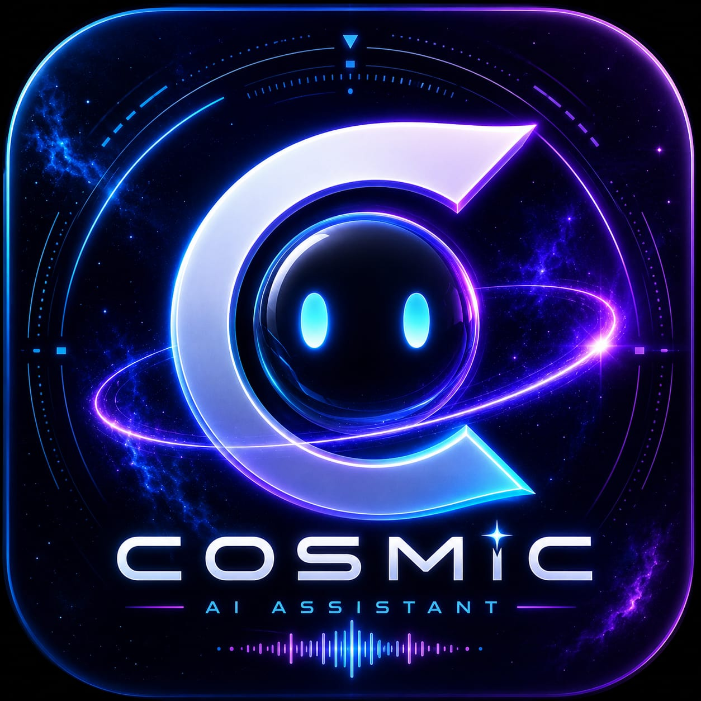

Conversational Chat
Ask questions, generate content, continue tasks, and use memory-powered context.

Cosmic DownloadWindows desktop AI assistant
A futuristic personal assistant for chat, voice commands, hand gesture control, app launching, reminders, emotion awareness, and smart system actions.
What Cosmic does
Ask questions, generate content, continue tasks, and use memory-powered context.
Talk to Cosmic continuously and hear spoken responses after commands finish.
Use webcam gestures for mouse control, clicks, volume, brightness, and launch actions.
Open Chrome, Calculator, WhatsApp, Cosmic tools, and custom apps from chat.
Create reminders, alarms, notes, and quick task helpers from one chat screen.
Check AI server, voice, gesture, camera, and local command status in one command.
Install Cosmic
The installer includes the desktop application files. AI chat needs Cosmic Server access; local commands still work on the computer.
Click the download button and save CosmicSetup.exe.
Run the installer, allow Windows permissions, and finish setup.
Open Cosmic from the Desktop shortcut or Windows Start menu.
Type in chat to check everything.
Before install
Windows 10 or Windows 11, 64-bit recommended.
Required for online AI replies and server-based chat.
Needed for voice input and speech recognition.
Needed for gesture control and emotion detection.
Quick support
After opening Cosmic, try these inside the chat page.